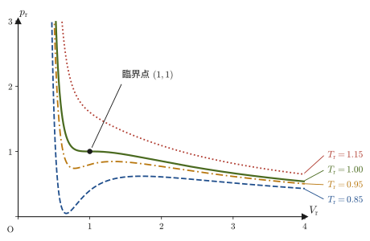
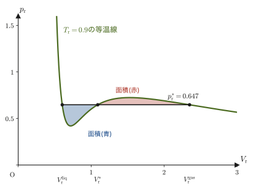
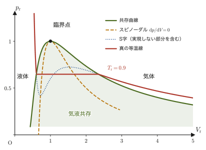
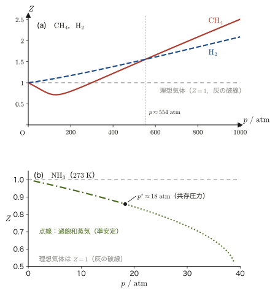
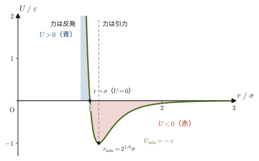
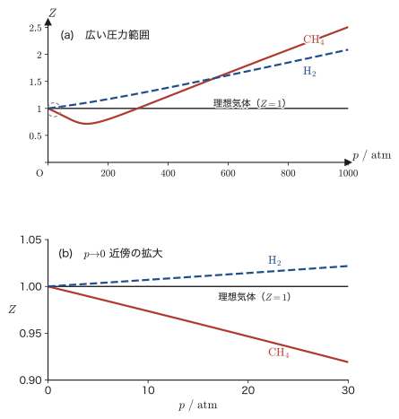
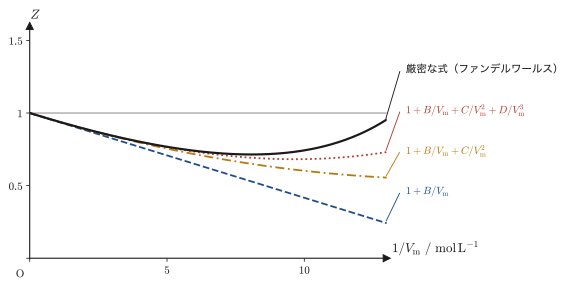
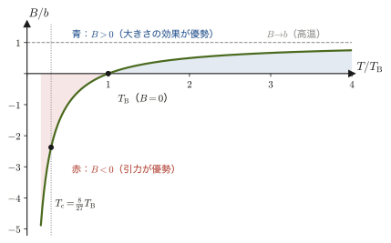

第25章実在気体 — 対応状態の原理・圧縮因子・ビリアル展開
前章で，理想気体の状態方程式 $pV=nRT$ に，分子自身の大きさ（体積 $b$）と分子間力（引力の強さ $a$）という2つの「現実の効果」を補正として付け加えたファンデルワールス（van der Waals）の状態方程式 $(p+a/V^2)(V-b)=RT$（1 モルあたり）を学んだ．この式は，温度を下げていくと気体がある温度・圧力・体積（臨界点）で液体に変わってしまう——理想気体では絶対に起こらない現象——を数式の中に自然に含んでいた．本章では，この実在気体の状態方程式をさらに深く調べる．
まず驚くべき事実に出会う：ヘリウムでも二酸化炭素でも，物質ごとに $a,b$ の値はまったく違うのに，圧力・体積・温度を「臨界点からの比」（還元変数）で測り直すと，どんな気体も（ファンデルワールスの状態方程式に従うかぎり）同じ1本の状態方程式に従う．実在の気体でも，この関係は近似的によく成り立つ——これを対応状態の原理（principle of corresponding states）という．次に，ファンデルワールスの状態方程式が $T$ が臨界温度より低いとき「S字型」の不自然な等温線を与えてしまう問題を，マクスウェル（Maxwell）の等面積則によって解決し，気体が液体に変わる圧力（気液共存圧力）を求める方法を学ぶ．
後半では，実在気体が理想気体からどれだけずれているかを一言で表す圧縮因子 $Z=pV/(nRT)$ と，理想気体の状態方程式を「$1/V_{\mathrm m}$ のべき級数」として拡張したビリアル状態方程式を学ぶ．ビリアル展開の第2項の係数（第2ビリアル係数 $B$）がファンデルワールスの定数 $a,b$ とどう結びつくかを具体的に計算し，$B=0$ になる特別な温度——ボイル温度——が実在気体の性質にとって何を意味するのかを理解する．
- 還元変数 $p_{\mathrm r}=p/p_{\mathrm c},\ V_{\mathrm r}=V/V_{\mathrm c},\ T_{\mathrm r}=T/T_{\mathrm c}$ の定義と，ファンデルワールスの状態方程式をこれらで書き直した還元状態方程式 $(p_{\mathrm r}+3/V_{\mathrm r}^2)(3V_{\mathrm r}-1)=8T_{\mathrm r}$（対応状態の原理）の導出
- 臨界温度以下でファンデルワールスの等温線がS字型になる理由と，ギブスエネルギーが等しいという条件からマクスウェルの等面積則を導き，気液共存圧力を求める方法
- 圧縮因子 $Z=pV/(nRT)$ の定義と，$Z\gtrless1$ が分子間力・分子の大きさのどちらが優勢かを表すこと
- ビリアル状態方程式 $pV_{\mathrm m}=RT(1+B/V_{\mathrm m}+C/V_{\mathrm m}^2+\cdots)$ の定義と，どんな圧力・体積でも実在気体は理想気体から必ずずれることの証明
- ファンデルワールスの状態方程式を $1/V_{\mathrm m}$ のべき級数に展開して第2ビリアル係数 $B=b-a/(RT)$ を求め，$B=0$ となるボイル温度 $T_{\mathrm B}=a/(Rb)$ を導く
もとにしたノート：望月泰英『物理学ノート 熱力学』 pp. 18–24（p.21・p.24 は白紙）．
25.1 対応状態の原理と還元状態方程式
本節では，理想気体からのずれを表す2つの道具（次節以降）の準備として，ファンデルワールスの状態方程式を臨界点を基準にした無次元の変数（還元変数）で書き直し（還元状態方程式，対応状態の原理），さらに臨界温度以下で現れるS字型の等温線から気液共存の圧力を決めるマクスウェルの規則を導く．なお，本節では特に断らない限り，前章と同じく $V$ は気体 $1\ \mathrm{mol}$ あたりの体積（モル体積）を表す．
25.1.1 還元変数と対応状態の原理
前章で見たように，ファンデルワールスの状態方程式
\begin{equation} \left(p+\frac{a}{V^2}\right)(V-b)=RT \label{eq:25-vdw-recall} \end{equation}は，物質ごとに異なる2つの定数 $a\ [\mathrm{Pa\,m^6/mol^2}]$（分子間力の強さ）と $b\ [\mathrm{m^3/mol}]$（分子自身の大きさ）を持つ．たとえばヘリウムは $a$ が非常に小さく，二酸化炭素は $a$ が大きい——分子ごとに引き合う力の強さが違うのだから，これは当然である．ところが，臨界点（前章で導いた，等温線が水平な接線をもつ変曲点，すなわち $\partial p/\partial V=0$ かつ $\partial^2p/\partial V^2=0$ となる特別な点）
\begin{equation} V_{\mathrm c}=3b,\qquad T_{\mathrm c}=\frac{8a}{27Rb},\qquad p_{\mathrm c}=\frac{a}{27b^2} \label{eq:25-critical-recall} \end{equation}を基準にして，圧力・体積・温度をそれぞれ「臨界点の何倍か」という比で測り直すと，驚くべきことが起こる．臨界点は，気体と液体の区別が消える特別な点であり，物質ごとに実験で測りやすい．これを共通の基準の目盛りにするのである．
定義25.1 還元変数（reduced variables）
気体の圧力 $p$，体積 $V$（モル体積），温度 $T$ を，その気体自身の臨界圧力 $p_{\mathrm c}$，臨界体積 $V_{\mathrm c}$，臨界温度 $T_{\mathrm c}$ で割った無次元の量
\begin{equation} p_{\mathrm r}\equiv\frac{p}{p_{\mathrm c}},\qquad V_{\mathrm r}\equiv\frac{V}{V_{\mathrm c}},\qquad T_{\mathrm r}\equiv\frac{T}{T_{\mathrm c}} \label{eq:25-reduced-vars} \end{equation}を，それぞれ還元圧力（reduced pressure），還元体積（reduced volume），還元温度（reduced temperature）という．$p_{\mathrm r},V_{\mathrm r},T_{\mathrm r}$ はいずれも単位を持たない純粋な数である点に注意しよう（$p_{\mathrm c}$ 自身と同じ単位で割っているので単位が消える）．
「還元」という訳語は，元の量を無次元の比に「還元する（reduce）」という意味であり，何かを減らすという意味ではない．
式 \eqref{eq:25-vdw-recall} を還元変数で書き直すとどうなるか，実際に計算してみよう．
25.1.2 還元ファンデルワールス状態方程式の導出
導出：還元ファンデルワールス状態方程式
式 \eqref{eq:25-reduced-vars} を変形すると $p=p_{\mathrm r}p_{\mathrm c},\ V=V_{\mathrm r}V_{\mathrm c},\ T=T_{\mathrm r}T_{\mathrm c}$ である．これを式 \eqref{eq:25-critical-recall} の臨界定数の表式とともに式 \eqref{eq:25-vdw-recall} に代入する．まず左辺の $a/V^2$ の項は，
$$ \frac{a}{V^2}=\frac{a}{(V_{\mathrm r}V_{\mathrm c})^2}=\frac{a}{V_{\mathrm r}^2(3b)^2}=\frac{a}{9b^2V_{\mathrm r}^2} $$となる．ここで $p_{\mathrm c}=a/(27b^2)$ すなわち $a/b^2=27p_{\mathrm c}$ を使って書き直すと，
$$ \frac{a}{V^2}=\frac{27p_{\mathrm c}}{9V_{\mathrm r}^2}=\frac{3p_{\mathrm c}}{V_{\mathrm r}^2} $$となるので，式 \eqref{eq:25-vdw-recall} の左辺第1因子は
$$ p+\frac{a}{V^2}=p_{\mathrm r}p_{\mathrm c}+\frac{3p_{\mathrm c}}{V_{\mathrm r}^2}=p_{\mathrm c}\left(p_{\mathrm r}+\frac{3}{V_{\mathrm r}^2}\right) $$とまとまる．次に左辺第2因子は，$V_{\mathrm c}=3b$ を使うと，
$$ V-b=V_{\mathrm r}V_{\mathrm c}-b=3bV_{\mathrm r}-b=b(3V_{\mathrm r}-1) $$となる．したがって左辺全体は
$$ \left(p+\frac{a}{V^2}\right)(V-b)=p_{\mathrm c}\left(p_{\mathrm r}+\frac{3}{V_{\mathrm r}^2}\right)\cdot b(3V_{\mathrm r}-1)=p_{\mathrm c}b\left(p_{\mathrm r}+\frac{3}{V_{\mathrm r}^2}\right)(3V_{\mathrm r}-1) $$となり，$p_{\mathrm c}=a/(27b^2)$ を代入すれば $p_{\mathrm c}b=a/(27b)$ である．一方，右辺は $T_{\mathrm c}=8a/(27Rb)$ を使うと，
$$ RT=RT_{\mathrm r}T_{\mathrm c}=RT_{\mathrm r}\cdot\frac{8a}{27Rb}=\frac{8a}{27b}T_{\mathrm r} $$となる．左辺 $=$ 右辺とおくと，
$$ \frac{a}{27b}\left(p_{\mathrm r}+\frac{3}{V_{\mathrm r}^2}\right)(3V_{\mathrm r}-1)=\frac{8a}{27b}T_{\mathrm r} $$となり，両辺に共通する（$a,b$ に依存する）因子 $a/(27b)$ で両辺を割ると，ついに $a$ も $b$ もどこにも現れない式が得られる：
\begin{equation} \left(p_{\mathrm r}+\frac{3}{V_{\mathrm r}^2}\right)(3V_{\mathrm r}-1)=8T_{\mathrm r} \label{eq:25-reduced-vdw} \end{equation}次元の確認：$p_{\mathrm r},V_{\mathrm r},T_{\mathrm r}$ はどれも無次元（定義25.1）で，$3$，$1$，$8$ も純粋な数だから，式 \eqref{eq:25-reduced-vdw} の両辺は無次元である．単位をもつ $a,b,R$ が式に残っていないことと，つじつまが合っている．
（導出終わり）
式 \eqref{eq:25-reduced-vdw} を還元状態方程式（reduced equation of state）という．この式のどこにも，物質固有の定数 $a,b$（したがって $R$ も）が残っていないことに注目してほしい——還元変数 $p_{\mathrm r},V_{\mathrm r},T_{\mathrm r}$ で測るかぎり，ヘリウムも二酸化炭素も水も（ファンデルワールスの状態方程式にしたがうと仮定するかぎり）まったく同じ1本の状態方程式にしたがう．これが対応状態の原理である．
法則25.1 対応状態の原理（law of corresponding states）
異なる気体を，それぞれの臨界圧力・臨界体積・臨界温度を基準にした還元変数 $p_{\mathrm r}=p/p_{\mathrm c},\ V_{\mathrm r}=V/V_{\mathrm c},\ T_{\mathrm r}=T/T_{\mathrm c}$ で表すと，どの気体も同じ形の状態方程式にしたがう．ファンデルワールスの状態方程式にしたがう気体では，それは式 \eqref{eq:25-reduced-vdw} である．言い換えると，2つの異なる気体が同じ還元温度・還元圧力（したがって式 \eqref{eq:25-reduced-vdw} を通じて同じ還元体積）の状態にあるとき，両者は「対応する状態」にあるといい，同じような振る舞い（同じような圧縮因子 $Z$，同じような相図上の位置づけ）を示す．
ただし，厳密に成り立つのは，物質ごとの定数が2つだけの状態方程式（ファンデルワールスの式など）に従う気体に限られる．実在の気体では近似的にしか成り立たない．たとえば臨界点での圧縮因子 $Z_{\mathrm c}=p_{\mathrm c}V_{\mathrm c}/(RT_{\mathrm c})$（25.2節）は，ファンデルワールス気体では物質によらず $3/8=0.375$（演習25.2）だが，実測は多くの気体で $0.27$〜$0.29$ 程度である．水素・ヘリウムのように軽い気体では量子効果のためさらに外れる．それでも実在気体の $Z$ を還元変数で整理すると多くの気体がほぼ1本の曲線に近づくことが知られており（一般化圧縮因子図，25.2節），精度を上げたいときは偏心因子（acentric factor）などの第3のパラメータを加える．
イメージ：なぜファンデルワールスの定数が消えるのか
式 \eqref{eq:25-reduced-vdw} の導出をふり返ると，$a,b$ が消えたからくりは，臨界定数 $p_{\mathrm c},V_{\mathrm c},T_{\mathrm c}$ 自身が $a,b,R$ の組み合わせで書けていたことにある．還元変数は，いわば「その気体固有のものさし（$p_{\mathrm c},V_{\mathrm c},T_{\mathrm c}$）で測った圧力・体積・温度」なので，気体ごとに違う分子の大きさや引力の強さの情報は，すでにものさしの中に「編み込まれて」しまっている．地図の縮尺にたとえると分かりやすい．日本地図とオーストラリア地図は，実際の大きさはまったく違うが，それぞれの国の大きさを1として描けば同じ大きさの図に見える．$a,b$ は気体ごとの「縮尺」（$p,V,T$ の目盛りの大きさ）を決める量であり，臨界定数で割るとその縮尺が消えるのである．

例題25.1 臨界点は還元変数でどう見えるか
臨界点そのもの，すなわち $p=p_{\mathrm c},V=V_{\mathrm c},T=T_{\mathrm c}$ の状態を還元変数で表すと $(p_{\mathrm r},V_{\mathrm r},T_{\mathrm r})=(1,1,1)$ になることを確認し，これが還元状態方程式 \eqref{eq:25-reduced-vdw} を満たすことを検算せよ．
解答 定義25.1に $p=p_{\mathrm c},V=V_{\mathrm c},T=T_{\mathrm c}$ を代入すると，$p_{\mathrm r}=p_{\mathrm c}/p_{\mathrm c}=1$，$V_{\mathrm r}=V_{\mathrm c}/V_{\mathrm c}=1$，$T_{\mathrm r}=T_{\mathrm c}/T_{\mathrm c}=1$ となり，確かに $(1,1,1)$ である．これを式 \eqref{eq:25-reduced-vdw} の左辺・右辺にそれぞれ代入すると，
$$ \text{左辺}=\left(1+\frac{3}{1^2}\right)(3\cdot1-1)=4\times2=8,\qquad \text{右辺}=8\times1=8 $$で一致する．どんな気体でも，臨界点は還元変数で測ればこの同じ1点 $(1,1,1)$ に集まる——これも対応状態の原理の帰結である．
次に，この点が等温線の水平な変曲点であること（$\partial p_{\mathrm r}/\partial V_{\mathrm r}=0$ かつ $\partial^2p_{\mathrm r}/\partial V_{\mathrm r}^2=0$）も確かめよう．$T_{\mathrm r}$ を一定に保って $V_{\mathrm r}$ で微分するので，普通の微分でよい．還元状態方程式を $p_{\mathrm r}=8T_{\mathrm r}/(3V_{\mathrm r}-1)-3/V_{\mathrm r}^2$ と書き，$\dd(3V_{\mathrm r}-1)/\dd V_{\mathrm r}=3$ を使って微分すると，
$$ \frac{\dd p_{\mathrm r}}{\dd V_{\mathrm r}}=-\frac{24T_{\mathrm r}}{(3V_{\mathrm r}-1)^2}+\frac{6}{V_{\mathrm r}^3},\qquad \frac{\dd^2p_{\mathrm r}}{\dd V_{\mathrm r}^2}=\frac{144T_{\mathrm r}}{(3V_{\mathrm r}-1)^3}-\frac{18}{V_{\mathrm r}^4} $$である．$V_{\mathrm r}=T_{\mathrm r}=1$ を代入すると，$-24/4+6=-6+6=0$，$144/8-18=18-18=0$ となり，どちらも $0$ である．つまり，臨界点 $(1,1,1)$ は還元変数で測っても等温線の水平な変曲点であり，臨界点が還元変数で普遍的な1点になることが，式 \eqref{eq:25-reduced-vdw} の中身として確かめられた．
例題25.2 窒素ガスの還元変数と対応する状態
窒素 $\mathrm{N_2}$ のファンデルワールスの定数は，前章で見たとおり $a=0.137\ \mathrm{Pa\,m^6/mol^2}$，$b=3.87\times10^{-5}\ \mathrm{m^3/mol}$ である．(1) 温度 $T=300\ \mathrm K$，圧力 $p=10\ \mathrm{atm}$（$1\ \mathrm{atm}=101325\ \mathrm{Pa}$）にある窒素ガスの還元温度 $T_{\mathrm r}$ と還元圧力 $p_{\mathrm r}$ を求めよ．(2) この窒素と同じ還元状態にある二酸化炭素 $\mathrm{CO_2}$（臨界定数 $T_{\mathrm c}=304.1\ \mathrm K$，$p_{\mathrm c}=7.38\ \mathrm{MPa}$）の温度と圧力を求め，2つの気体の還元体積 $V_{\mathrm r}$ と圧縮因子 $Z$ が等しいことを確かめよ．
解答 (1) まず式 \eqref{eq:25-critical-recall} で臨界定数を求める．$R=8.314\ \mathrm{J/(mol\,K)}$ として，
$$ T_{\mathrm c}=\frac{8a}{27Rb}=\frac{8\times0.137}{27\times8.314\times3.87\times10^{-5}}\ \mathrm K\approx126.2\ \mathrm K $$ $$ p_{\mathrm c}=\frac{a}{27b^2}=\frac{0.137}{27\times(3.87\times10^{-5})^2}\ \mathrm{Pa}\approx3.388\times10^{6}\ \mathrm{Pa}\approx33.4\ \mathrm{atm} $$（実測値は $T_{\mathrm c}\approx126.2\ \mathrm K$，$p_{\mathrm c}\approx33.5\ \mathrm{atm}$．ただし，ファンデルワールスの定数 $a,b$ は通常，実測の $T_{\mathrm c},p_{\mathrm c}$ に合うように決められた値なので，これらが実測とほぼ一致するのは当然であり，モデルの検証にはならない．モデルの本当の検証は，臨界圧縮因子 $Z_{\mathrm c}=p_{\mathrm c}V_{\mathrm c}/(RT_{\mathrm c})$ である．ファンデルワールスの予測は $3/8=0.375$ で，窒素の実測 $0.29$ 前後より大きく，モデルは臨界体積をやや大きく見積もっている．）次に定義25.1より，
$$ T_{\mathrm r}=\frac{T}{T_{\mathrm c}}=\frac{300}{126.2}\approx2.38,\qquad p_{\mathrm r}=\frac{p}{p_{\mathrm c}}=\frac{10\ \mathrm{atm}}{33.4\ \mathrm{atm}}\approx0.299 $$である．$T_{\mathrm r}\approx2.4$ は臨界温度の2倍以上なので，この窒素は，どれだけ圧縮しても液体にならない（等温線がS字にならない）ふつうの気体の領域にある．
(2) 同じ還元状態とは $T_{\mathrm r}\approx2.38,\ p_{\mathrm r}\approx0.299$ のことである．定義25.1を $T=T_{\mathrm r}T_{\mathrm c}$，$p=p_{\mathrm r}p_{\mathrm c}$ と使うと，二酸化炭素では
$$ T=2.378\times304.1\ \mathrm K\approx723\ \mathrm K,\qquad p=0.299\times7.38\ \mathrm{MPa}\approx2.2\ \mathrm{MPa}\ (\approx22\ \mathrm{atm}) $$である．つまり，窒素の $300\ \mathrm K$，$10\ \mathrm{atm}$ に「対応する状態」は，二酸化炭素では約 $723\ \mathrm K$（$450\ {}^\circ\mathrm C$），約 $22\ \mathrm{atm}$ である．還元体積は，どちらの気体でも同じ $(p_{\mathrm r},T_{\mathrm r})$ を式 \eqref{eq:25-reduced-vdw} に代入するのだから同じ値になる．例題25.3と同じ形の3次方程式 $3p_{\mathrm r}V_{\mathrm r}^3-(p_{\mathrm r}+8T_{\mathrm r})V_{\mathrm r}^2+9V_{\mathrm r}-3=0$ を解くと，実数解は $V_{\mathrm r}\approx21.07$ の1つだけである．圧縮因子は，$Z=pV/(RT)$ に $p=p_{\mathrm r}p_{\mathrm c},\ V=V_{\mathrm r}V_{\mathrm c},\ T=T_{\mathrm r}T_{\mathrm c}$ を代入し，$Z_{\mathrm c}=p_{\mathrm c}V_{\mathrm c}/(RT_{\mathrm c})=3/8$ を使うと
$$ Z=\frac{p_{\mathrm r}p_{\mathrm c}\,V_{\mathrm r}V_{\mathrm c}}{R\,T_{\mathrm r}T_{\mathrm c}}=Z_{\mathrm c}\,\frac{p_{\mathrm r}V_{\mathrm r}}{T_{\mathrm r}}=\frac38\times\frac{0.299\times21.07}{2.378}\approx0.994 $$となり，これも2つの気体で同じである．どちらも理想気体からのずれは $0.6\ \%$ 程度にすぎない．こうして，$a,b$ がまったく違う気体でも，同じ還元状態では同じ $V_{\mathrm r}$，同じ $Z$ になることが数値で確かめられた．対応状態の原理により，$T_{\mathrm r}\approx2.4,\ p_{\mathrm r}\approx0.30$ という同じ還元状態にあるどんな気体も，窒素とほぼ同じ圧縮因子 $Z$（25.2節）を持つはずである．
応用：対応状態の原理と超臨界流体
対応状態の原理は，工学でも重要な指針になる．たとえば二酸化炭素は $T_{\mathrm c}\approx304\ \mathrm K$（約 $31\ {}^\circ\mathrm C$），$p_{\mathrm c}\approx7.4\ \mathrm{MPa}$（約 $73\ \mathrm{atm}$）と，室温に近い臨界点を持つ．$T_{\mathrm r}\gtrsim1,\ p_{\mathrm r}\gtrsim1$ の「超臨界」領域では，気体と液体の区別が消えて，気体のように隅々まで拡散しながら液体のように物質をよく溶かす特殊な流体になる．この超臨界二酸化炭素は，コーヒー豆からのカフェイン抽出や，ドライクリーニングの溶剤として実際に使われている．対応状態の原理が教えるのは，同じような還元状態を作れば，二酸化炭素でなくても（毒性や環境負荷の少ない別の流体でも）同じような超臨界的な振る舞いが期待できる，ということである．
25.1.3 S字型の等温線とマクスウェルの規則
図25.1をもう一度見てみよう．臨界温度以上（$T_{\mathrm r}\ge1$）の等温線は，$V_{\mathrm r}$ を大きくすると $p_{\mathrm r}$ が単調に（なめらかに）減少する，理想気体の等温線と同じ「素直な」形をしている．ところが，臨界温度未満（$T_{\mathrm r}\lt1$）の等温線は，途中で一度下がってから上がり，またゆるやかに下がるという，S字型にへこんだ形をしている．この奇妙な形が何を意味するのか，具体的な数値で確かめてみよう．
例題25.3 与えられた還元圧力・還元温度に対する還元体積
還元温度 $T_{\mathrm r}=0.9$，還元圧力 $p_{\mathrm r}=0.65$ のとき，還元状態方程式 \eqref{eq:25-reduced-vdw} を満たす還元体積 $V_{\mathrm r}$ をすべて求めよ．
解答 式 \eqref{eq:25-reduced-vdw} の左辺を展開する．$(p_{\mathrm r}V_{\mathrm r}^2+3)(3V_{\mathrm r}-1)=8T_{\mathrm r}V_{\mathrm r}^2$ の両辺を展開して $V_{\mathrm r}$ の3次方程式の形に整理すると，
$$ 3p_{\mathrm r}V_{\mathrm r}^3-(p_{\mathrm r}+8T_{\mathrm r})V_{\mathrm r}^2+9V_{\mathrm r}-3=0 $$となる（両辺を比べて $V_{\mathrm r}^3,V_{\mathrm r}^2,V_{\mathrm r}^1,V_{\mathrm r}^0$ の係数を整理しただけである）．$p_{\mathrm r}=0.65,\ T_{\mathrm r}=0.9$ を代入すると，
$$ 1.95\,V_{\mathrm r}^3-7.85\,V_{\mathrm r}^2+9V_{\mathrm r}-3=0 $$という3次方程式になる．3次方程式は実数解を1個または3個持つ（複素数解は共役な対で現れるため）．左辺を $f(V_{\mathrm r})$ とおいて，符号の変わる場所を探す．
| $V_{\mathrm r}$ | $0.5$ | $0.7$ | $1.0$ | $1.2$ | $2.0$ | $2.5$ |
|---|---|---|---|---|---|---|
| $f(V_{\mathrm r})$ | $-0.219$ | $+0.123$ | $+0.100$ | $-0.134$ | $-0.800$ | $+0.906$ |
符号が $-\to+\to-\to+$ と3回変わるので，中間値の定理（連続関数が区間の両端で異符号なら，その区間のどこかで $0$ になる）により，区間 $(0.5,\,0.7)$，$(1.0,\,1.2)$，$(2.0,\,2.5)$ にそれぞれ少なくとも1つ解がある．3次方程式の解は高々3個だから，これで全部である．各区間を2分法（区間を半分にして，符号の変わるほうを残す操作）やニュートン法で絞り込むと，
$$ V_{\mathrm r}\approx0.603,\qquad V_{\mathrm r}\approx1.097,\qquad V_{\mathrm r}\approx2.325 $$という3つの実数解が得られる．たとえば $V_{\mathrm r}=0.603$ を代入すると $f(0.603)\approx0.0002$ とほぼ $0$ になり，確かに解である．$T_{\mathrm r}\ge1$（臨界温度以上）では同じ計算をすると実数解はただ1つしか出てこないのに対し，$T_{\mathrm r}\lt1$ で $p_{\mathrm r}$ が適当な範囲にあるとき（$T_{\mathrm r}=0.9$ では約 $0.42\lt p_{\mathrm r}\lt0.72$．この範囲は例題25.4で求める）にはこのように3つの実数解が現れる——これが，図25.3のS字型の等温線が水平線 $p_{\mathrm r}=0.65$ と3回交わることに対応している．
注意：真ん中の解は物理的に実現しない
例題25.3で得た3つの解のうち，真ん中の解 $V_{\mathrm r}\approx1.097$ は，図25.3のS字型の谷（極小）から山（極大）までの区間，すなわち $V_{\mathrm r}$ を増やすと $p_{\mathrm r}$ も増える（$T$ 一定で $\dd p/\dd V\gt0$）区間に属している．体積を増やしたときに圧力まで増えてしまうというのは，力学的に不安定である（ほんの少し体積が増えるゆらぎが起きただけで，圧力の変化がそのゆらぎをさらに大きくする方向にはたらき，つぶれるか爆発的に膨張するかしてしまう）．したがって真ん中の解は，どんな実験でも実現しない数学的な解にすぎない．残る2つの解 $V_{\mathrm r}\approx0.603$ と $2.325$ は，それぞれ「密に詰まった液体」「薄く広がった気体」に対応する．では，この2つのうちどちらが実際に実現するのか，あるいは圧力 $p_{\mathrm r}=0.65$ という値自体がそもそも共存の圧力として正しいのか——これに答えるのが，これから導くマクスウェルの規則である．
S字型の等温線のどこが実現するのかを整理しよう．$\dd p/\dd V=0$ となる谷（極小）と山（極大）の2点をスピノーダル点（spinodal point）という．その間の区間（$\dd p/\dd V\gt0$）は力学的に不安定で，どんな条件でも実現しない．スピノーダル点の外側は力学的には安定だが，そのすべてが熱力学的な平衡状態とは限らない．次に述べるマクスウェルの規則で決まる共存点（液体側 $V_{\mathrm r}^{\mathrm{liq}}$，気体側 $V_{\mathrm r}^{\mathrm{gas}}$．例題25.3のような3つの解のうち外側の2つ）とスピノーダル点の間（$T_{\mathrm r}=0.9$ では $0.603\lt V_{\mathrm r}\lt0.719$ と $1.529\lt V_{\mathrm r}\lt2.349$）は準安定な状態（過熱した液体，過飽和の蒸気）で，ていねいに実験すると短時間は実現するが，ちょっとしたきっかけで気液共存の状態に変わってしまう．安定な液体・気体としてS字型をそのまま使えるのは，$V_{\mathrm r}\lt V_{\mathrm r}^{\mathrm{liq}}$（液体）と $V_{\mathrm r}\gt V_{\mathrm r}^{\mathrm{gas}}$（気体）の部分だけである（図25.4にまとめた）．その間をつなぐ実際の等温線（実験で測ると得られるもの）は，S字の山や谷をなぞらず，ある一定の圧力で体積だけが変化する水平な区間になる——これは，その圧力のもとで気体と液体が同時に存在する「気液共存」の区間である（図25.2）．この水平区間をどの高さ（どの圧力）に引けばよいかを決めるのが，マクスウェルの規則である．
先取り：ギブスエネルギーと相平衡の条件
ここで使う考え方を1つだけ，正式な定義に先立って借りておく．一定温度・一定圧力のもとでは，物質はギブスエネルギー（Gibbs energy）$G$（後の章で正式に定義する，エンタルピー $H$ とエントロピー $S$ から $G=H-TS$ で作られる状態量）が最小になる状態で安定に存在する．2つの相（液体と気体）が同じ温度・同じ圧力のもとで共存して安定であるためには，1 モルあたりのギブスエネルギー $G_{\mathrm m}$ が，液体でも気体でも等しくなければならない（もし違えば，ギブスエネルギーの低いほうへすべての物質が移ってしまい，共存できない）．また，一定温度のもとでギブスエネルギーの全微分は $\dd G=V\,\dd p$ になる（これも 後の章で $\dd G=-S\,\dd T+V\,\dd p$ として一般的に導く関係式の，$\dd T=0$ の場合である）．たとえば理想気体なら，$V_{\mathrm m}=RT/p$ を代入して積分すると $G_{\mathrm m}=G^{\circ}+RT\ln(p/p^{\circ})$ となる（$G^{\circ}$ は基準の圧力 $p^{\circ}$ での値）．以下では，この2つの事実——①等温での相平衡は $G_{\mathrm m}$ が等しいこと，②等温では $\dd G_{\mathrm m}=V\,\dd p$ ——だけを使う．
導出：マクスウェルの等面積則
ある温度 $T\ (\lt T_{\mathrm c})$ の等温線上で，液体の状態を点A（体積 $V_{\mathrm A}$），気体の状態を点B（体積 $V_{\mathrm B}$）とし，AとBが同じ圧力 $p^{*}$（気液共存圧力）にあるとする．AとBが共存して安定であるための条件は，先に述べたとおり $G_{\mathrm m}(\mathrm A)=G_{\mathrm m}(\mathrm B)$ である．すなわち，
$$ G_{\mathrm m}(\mathrm B)-G_{\mathrm m}(\mathrm A)=0 $$でなければならない．$G_{\mathrm m}$ は状態量（状態だけで決まり，そこに至る道筋によらない量）なので，AとBの差は，どんな経路で積分しても同じである．そこで，計算しやすいファンデルワールスの等温線 $p(V)$ にそって連続的に積分する（曲線の途中に実現しない状態が含まれていても，数学的な積分の道筋としては構わない）．左辺をAからBへ積分した形に書くと，
\begin{equation} G_{\mathrm m}(\mathrm B)-G_{\mathrm m}(\mathrm A)=\int_{\mathrm A}^{\mathrm B}\dd G_{\mathrm m}=\int_{V_{\mathrm A}}^{V_{\mathrm B}}V\,\frac{\dd p}{\dd V}\,\dd V \label{eq:25-maxwell-integral0} \end{equation}である（等温だから $\dd G_{\mathrm m}=V\,\dd p$ を使い，$\dd p=(\dd p/\dd V)\dd V$ として積分変数を $V$ に統一した）．この積分を，高校数学でも既習の部分積分（$\displaystyle\int u\,\frac{\dd v}{\dd V}\dd V=\Bigl[uv\Bigr]-\displaystyle\int v\,\frac{\dd u}{\dd V}\dd V$，$u=V,\ v=p$ とおく）で書き直す：
$$ \int_{V_{\mathrm A}}^{V_{\mathrm B}}V\,\frac{\dd p}{\dd V}\,\dd V=\Bigl[V\,p(V)\Bigr]_{V_{\mathrm A}}^{V_{\mathrm B}}-\int_{V_{\mathrm A}}^{V_{\mathrm B}}p(V)\,\dd V $$点A，Bはともに圧力 $p^{*}$ にあるから，$\bigl[Vp(V)\bigr]_{V_{\mathrm A}}^{V_{\mathrm B}}=V_{\mathrm B}p^{*}-V_{\mathrm A}p^{*}=p^{*}(V_{\mathrm B}-V_{\mathrm A})$ である．したがって，式 \eqref{eq:25-maxwell-integral0} の右辺は
$$ p^{*}(V_{\mathrm B}-V_{\mathrm A})-\int_{V_{\mathrm A}}^{V_{\mathrm B}}p(V)\,\dd V $$となり，これが $0$ に等しいという条件から，
\begin{equation} \int_{V_{\mathrm A}}^{V_{\mathrm B}}p(V)\,\dd V=p^{*}(V_{\mathrm B}-V_{\mathrm A}) \label{eq:25-equal-area} \end{equation}が得られる．右辺 $p^{*}(V_{\mathrm B}-V_{\mathrm A})$ は，$p$-$V$ 図の上で，高さ $p^{*}$・幅 $V_{\mathrm B}-V_{\mathrm A}$ の長方形の面積にほかならない．一方，左辺 $\int_{V_{\mathrm A}}^{V_{\mathrm B}}p(V)\,\dd V$ は，実際のS字型の等温線 $p(V)$ の下の面積（積分の幾何学的な意味そのもの）である．式 \eqref{eq:25-equal-area} は，「S字の曲線の下の面積」と「水平線 $p=p^{*}$ の下の面積（長方形）」が等しいことを主張しており，これは図の上で，水平線より曲線が下にへこんでいる部分の面積（谷の面積）と，水平線より曲線が上に出っ張っている部分の面積（山の面積）が等しい，という条件と同じことである（谷の部分では「曲線の下の面積」が長方形よりへこんだ分だけ少なく，山の部分では出っ張った分だけ多いので，過不足なく打ち消し合うためには両方の面積が等しくなければならない）．
（導出終わり）
法則25.2 マクスウェルの等面積則（Maxwell's equal-area rule）
臨界温度未満のファンデルワールス等温線において，気液共存圧力 $p^{*}$ は，水平線 $p=p^{*}$ とS字型の等温線とで囲まれる2つの領域（液体側の谷と気体側の山）の面積が等しくなるように定める．すなわち，共存圧力 $p^{*}$ における3つの解 $V_{\mathrm r}^{\mathrm{liq}}\lt V_{\mathrm r}^{*}\lt V_{\mathrm r}^{\mathrm{gas}}$（例題25.3のような3次方程式の3根）に対して，式 \eqref{eq:25-equal-area} の還元変数版
\begin{equation} \int_{V_{\mathrm r}^{\mathrm{liq}}}^{V_{\mathrm r}^{\mathrm{gas}}}p_{\mathrm r}(V_{\mathrm r})\,\dd V_{\mathrm r}=p_{\mathrm r}^{*}\left(V_{\mathrm r}^{\mathrm{gas}}-V_{\mathrm r}^{\mathrm{liq}}\right) \label{eq:25-equal-area-reduced} \end{equation}を満たす $p_{\mathrm r}^{*}$ が，その温度における気液共存圧力（還元蒸気圧）である．真の（実験で測られる）等温線は，$V_{\mathrm r}\lt V_{\mathrm r}^{\mathrm{liq}}$ では液体としてファンデルワールスの曲線をたどり，$V_{\mathrm r}^{\mathrm{liq}}\le V_{\mathrm r}\le V_{\mathrm r}^{\mathrm{gas}}$ では一定の圧力 $p_{\mathrm r}^{*}$ を保ったまま体積だけが増える（気液共存），$V_{\mathrm r}\gt V_{\mathrm r}^{\mathrm{gas}}$ では気体としてファンデルワールスの曲線をたどる，という3つの部分をつないだ形になる．

例題25.4 等面積則から共存圧力を数値的に求める
還元温度 $T_{\mathrm r}=0.9$ における気液共存圧力 $p_{\mathrm r}^{*}$ を，マクスウェルの等面積則（式 \eqref{eq:25-equal-area-reduced}）にしたがって求めよ．
解答 まず，等温線 $p_{\mathrm r}(V_{\mathrm r})=8T_{\mathrm r}/(3V_{\mathrm r}-1)-3/V_{\mathrm r}^2$ が谷・山を持つ範囲を求める．スピノーダル点は $\dd p_{\mathrm r}/\dd V_{\mathrm r}=-24T_{\mathrm r}/(3V_{\mathrm r}-1)^2+6/V_{\mathrm r}^3=0$，すなわち（両辺に $V_{\mathrm r}^3(3V_{\mathrm r}-1)^2$ を掛けて）$-24T_{\mathrm r}V_{\mathrm r}^3+6(3V_{\mathrm r}-1)^2=0$ を満たす．$T_{\mathrm r}=0.9$ を代入して解くと $V_{\mathrm r}\approx0.719$（谷）と $1.529$（山）で，そこでの圧力は $p_{\mathrm r}\approx0.420$ と $0.724$ である．共存圧力 $p_{\mathrm r}^{*}$ は，谷の圧力と山の圧力の間，$0.420\lt p_{\mathrm r}^{*}\lt0.724$ のどこかにある．
次に，$p_{\mathrm r}^{*}$ の値を仮定して等面積則が成り立つかどうかを調べる．式 \eqref{eq:25-equal-area-reduced} の左辺の積分は，原始関数 $\Phi(V_{\mathrm r})\equiv\dfrac{8T_{\mathrm r}}{3}\ln(3V_{\mathrm r}-1)+\dfrac{3}{V_{\mathrm r}}$ を使って $\Phi(V_{\mathrm r}^{\mathrm{gas}})-\Phi(V_{\mathrm r}^{\mathrm{liq}})$ と書ける（$\dd\Phi/\dd V_{\mathrm r}=8T_{\mathrm r}/(3V_{\mathrm r}-1)-3/V_{\mathrm r}^2=p_{\mathrm r}$ で確かめられる）．各 $p_{\mathrm r}^{*}$ について，例題25.3と同じ3次方程式から $V_{\mathrm r}^{\mathrm{liq}},V_{\mathrm r}^{*},V_{\mathrm r}^{\mathrm{gas}}$ を求め，左辺と右辺 $p_{\mathrm r}^{*}(V_{\mathrm r}^{\mathrm{gas}}-V_{\mathrm r}^{\mathrm{liq}})$ の差 $F=(\text{左辺})-(\text{右辺})$ を計算した結果が表25.2である．
| $p_{\mathrm r}^{*}$ | $V_{\mathrm r}^{\mathrm{liq}}$ | $V_{\mathrm r}^{*}$ | $V_{\mathrm r}^{\mathrm{gas}}$ | 左辺 | 右辺 | 差 $F$ |
|---|---|---|---|---|---|---|
| $0.600$ | $0.6126$ | $1.0000$ | $2.7208$ | $1.3554$ | $1.2649$ | $+0.0905$ |
| $0.640$ | $0.6047$ | $1.0751$ | $2.4036$ | $1.1637$ | $1.1513$ | $+0.0124$ |
| $0.647$ | $0.6034$ | $1.0905$ | $2.3488$ | $1.1293$ | $1.1293$ | $0.0000$ |
| $0.655$ | $0.6020$ | $1.1094$ | $2.2861$ | $1.0894$ | $1.1031$ | $-0.0137$ |
| $0.700$ | $0.5947$ | $1.2586$ | $1.9086$ | $0.8383$ | $0.9197$ | $-0.0814$ |
$F$ は $p_{\mathrm r}^{*}=0.640$ で正，$0.655$ で負だから，$F=0$ となる $p_{\mathrm r}^{*}$ はその間にある．この区間を2分法で絞り込むと，
$$ p_{\mathrm r}^{*}\approx0.647,\qquad V_{\mathrm r}^{\mathrm{liq}}\approx0.603,\qquad V_{\mathrm r}^{*}\approx1.091,\qquad V_{\mathrm r}^{\mathrm{gas}}\approx2.349 $$が得られる（図25.3はこの値で描いた）．確かめると，右辺は $0.647\times(2.3488-0.6034)=1.1293$，左辺は $\Phi(2.3488)-\Phi(0.6034)=1.1293$ で一致する．臨界圧力・臨界温度が分かっている実在気体（たとえば例題25.2の窒素なら $T=T_{\mathrm r}T_{\mathrm c}=0.9\times126.2\ \mathrm K\approx113.6\ \mathrm K$）では，$p^{*}=p_{\mathrm r}^{*}p_{\mathrm c}\approx0.647\times33.4\ \mathrm{atm}\approx21.6\ \mathrm{atm}$ のように，気液共存圧力（蒸気圧）の見積もりに変換できる（対応状態の原理のありがたみである）．実際の窒素の $113.6\ \mathrm K$ での蒸気圧は約 $17.7\ \mathrm{atm}$（$1.80\ \mathrm{MPa}$．NIST Chemistry WebBook の飽和蒸気圧データによる）なので，ファンデルワールスの見積もりは2割以上大きい．定性的には合うが，定量的には2定数モデルの限界がここに現れている．

考察：高校物理の「気体の状態変化」とのつながり
高校物理では，気体の圧縮を続けると，あるところで気体が液体に変わり始め，その間は圧力が一定のまま体積だけが減っていく（$p$-$V$ 図の水平区間），という事実を実験事実として学ぶ．本節で見たのは，その水平区間の高さ（気液共存圧力）が，勝手に決められるものではなく，分子間力・分子の大きさを反映したファンデルワールスの状態方程式と，ギブスエネルギーが等しいという熱力学の要請（マクスウェルの規則）から，理論的に計算できる量である，という点である．高校では「実験でこうなっている」と教わったことの背後に，ここまで具体的な理論的裏付けがある．
25.2 実在気体と圧縮因子 $Z$
ここからは，圧縮因子とビリアル展開を学ぶ．25.1節では，ファンデルワールスの状態方程式という1つの具体的なモデルから出発して，実在気体の振る舞い（対応状態の原理，気液共存）を調べた．本節と次節では逆に，特定のモデルによらず，「理想気体からのずれ」そのものを直接測る量を導入する．なお，25.1節では $V$ を $1\ \mathrm{mol}$ あたりの体積（モル体積）としたが，本節からは，全体積を $V$，モル体積を $V_{\mathrm m}=V/n$ と書き分ける（25.1節の $V$ は $V_{\mathrm m}$ にあたる）．
定義25.2 圧縮因子（compression factor）
物質量 $n\ [\mathrm{mol}]$，体積 $V\ [\mathrm{m^3}]$，圧力 $p\ [\mathrm{Pa}]$，温度 $T\ [\mathrm K]$ の気体に対して，
\begin{equation} Z\equiv\frac{pV}{nRT},\qquad\text{すなわち1 molあたりでは}\qquad Z=\frac{pV_{\mathrm m}}{RT} \label{eq:25-Z-def} \end{equation}で定義される無次元の量 $Z$ を圧縮因子（compression factor，圧縮率因子ともいう）という．$Z$ を使うと，実在気体の状態方程式は $pV=nZRT$（$1\ \mathrm{mol}$ あたりでは $pV_{\mathrm m}=ZRT$）と書ける．理想気体の状態方程式 $pV=nRT$ は，まさに $Z=1$ の場合にほかならない．したがって $Z$ は「その気体が理想気体からどれだけずれているか」を1つの数値で表す，最も直接的な物差しである．
$Z$ の値は，同じ気体でも圧力や温度によって変わる．その大小は，ファンデルワールスの2つの補正——分子間力（引力，$a$ の効果）と分子自身の大きさ（斥力，$b$ の効果）——のどちらが優勢かを反映している：
イメージ：なぜ $Z$ が大きくなったり小さくなったりするのか
分子間に引力（ファンデルワールス力）がはたらくと，分子どうしが互いに引き寄せ合うぶん，容器の壁に与える衝突の勢いが弱まり，同じ体積・温度でも圧力は理想気体より下がる——$p$ が小さくなるので $Z=pV/(nRT)$ も小さくなる（$Z\lt1$）．逆に，分子自身に有限の大きさがあると，分子が実際に動き回れる空間は容器の体積 $V$ より少し狭くなり（これがファンデルワールスの $b$ の効果），同じ体積に押し込めようとすると，理想気体よりも強く反発し合って圧力が理想気体より高くなる——$Z$ が大きくなる（$Z\gt1$）．実際の気体では引力と斥力の両方が同時にはたらいており，圧力や体積（分子どうしの平均距離）によってどちらが勝つかが変わるので，$Z$ は圧力とともに複雑に変化する．
25.1節の対応状態の原理を使うと，実在気体の $Z$ も $T_{\mathrm r},p_{\mathrm r}$ の関数として，多くの気体でほぼ同じ曲線にのる．これをまとめた図を一般化圧縮因子図といい，工学で広く使われる（応用の枠を参照）．次の図25.5では，273 K で3種類の気体の $Z$ を圧力の関数として比べる．

例題25.5 圧縮因子から実際の体積を見積もる
ある気体が温度 $T=273\ \mathrm K$，圧力 $p=100\ \mathrm{atm}$ のもとで圧縮因子 $Z=0.80$ を持つとする．この気体 $1\ \mathrm{mol}$ の実際のモル体積 $V_{\mathrm m}$ を求め，同じ条件での理想気体のモル体積と比較せよ．
解答 定義25.2（式 \eqref{eq:25-Z-def}）を $V_{\mathrm m}$ について解くと $V_{\mathrm m}=ZRT/p$ である．理想気体のモル体積は $V_{\mathrm m}^{\mathrm{ideal}}=RT/p$（$Z=1$ の場合）だから，両者の関係は単純に
$$ V_{\mathrm m}=Z\,V_{\mathrm m}^{\mathrm{ideal}} $$である．$p=100\ \mathrm{atm}=1.01325\times10^{7}\ \mathrm{Pa}$，$T=273\ \mathrm K$，$R=8.314\ \mathrm{J/(mol\,K)}$ を代入すると，
$$ V_{\mathrm m}^{\mathrm{ideal}}=\frac{RT}{p}=\frac{8.314\times273}{1.01325\times10^{7}}\ \mathrm{m^3/mol}\approx2.241\times10^{-4}\ \mathrm{m^3/mol} $$であり，したがって
$$ V_{\mathrm m}=Z\,V_{\mathrm m}^{\mathrm{ideal}}=0.80\times2.241\times10^{-4}\ \mathrm{m^3/mol}\approx1.79\times10^{-4}\ \mathrm{m^3/mol} $$となる．$Z=0.80\lt1$ なので，実在気体の体積は理想気体より20 %小さい——分子間の引力が，この気体をわずかに「すでに凝縮しかけている」ように振る舞わせていることが分かる．
応用：天然ガスの取引と圧縮因子
天然ガス（主成分はメタン）を輸送・貯蔵する配管やタンクの設計では，圧力が数十〜数百気圧にも達するため，$Z=1$（理想気体）と仮定すると体積の見積もりに無視できない誤差が生じる．実務では，図25.5のような $Z$-$p$ のデータやそれをもとにした相関式（本章の対応状態の原理を使った一般化圧縮因子図なども含む）から $Z$ を読み取り，$pV=nZRT$ として体積・物質量を換算する．圧縮因子は，教科書の中だけの概念ではなく，ガス取引の請求書の計算にも実際に使われている量である．
25.3 ビリアル展開とビリアル状態方程式
25.3.1 ビリアル状態方程式
図25.5を見ると，圧縮因子 $Z$ は，圧力 $p$（あるいはモル体積の逆数 $1/V_{\mathrm m}$）の何らかの関数になっているらしいことが分かる——であれば，$Z$ を $p$（または $1/V_{\mathrm m}$）のべき級数として展開できるはずだ，というのが以下の発想である．これは，大学数学 第4章 4.2節で学んだマクローリン展開（$x=0$ のまわりでの関数のべき級数展開）の考え方を，「$p=0$（または $1/V_{\mathrm m}=0$，理想気体の極限）のまわりで $Z$ を展開する」という形で応用したものである．
定義25.3 ビリアル状態方程式（virial equation of state）
実在気体の圧縮因子 $Z=pV_{\mathrm m}/(RT)$ を，圧力 $p$ のべき級数として
\begin{equation} pV_{\mathrm m}=RT\left(1+B'p+C'p^2+\cdots\right) \label{eq:25-virial-p} \end{equation}の形に書いたものを（$p$ を変数とする）ビリアル状態方程式という．これは，理想気体の状態方程式 $pV_{\mathrm m}=RT$ に，補正項を次々に付け加えて拡張した式である．しかし実際には，同じ内容を $1/V_{\mathrm m}$ のべき級数として
\begin{equation} pV_{\mathrm m}=RT\left(1+\frac{B}{V_{\mathrm m}}+\frac{C}{V_{\mathrm m}^2}+\cdots\right) \label{eq:25-virial-V} \end{equation}の形に書くほうが，実用上はずっとよく使われる．ここで $B',C',\ldots$ および $B,C,\ldots$ は，気体の種類と温度によって決まる定数で，それぞれ第2，第3，……ビリアル係数（virial coefficient）と呼ばれる（$B',B$ が第2ビリアル係数，$C',C$ が第3ビリアル係数，$D',D$ が第4ビリアル係数）．「ビリアル」（virial）は，力（ラテン語の vis）に由来する語で，分子間力と圧力を結びつける力学量（ビリアル）にちなんで，密度のべき級数の係数がこう呼ばれるようになった．
導出：$B',C'$ と $B,C$ の関係
2つの形のビリアル係数は，同じ $Z$ を2通りに展開したものだから，互いに結びついている．$Z=pV_{\mathrm m}/(RT)$ より $1/V_{\mathrm m}=p/(RTZ)$ なので，式 \eqref{eq:25-virial-V} の $Z=1+B/V_{\mathrm m}+C/V_{\mathrm m}^2+\cdots$ に代入すると，
$$ Z=1+\frac{B}{RT}\frac{p}{Z}+\frac{C}{(RT)^2}\frac{p^2}{Z^2}+\cdots $$である．右辺の $Z$ に $Z=1+B'p+\cdots$ を入れ，$1/Z=1-B'p+\cdots$ と展開して $p^2$ の項まで残すと，
$$ Z=1+\frac{B}{RT}\,p\,(1-B'p)+\frac{C}{(RT)^2}\,p^2+\cdots=1+\frac{B}{RT}\,p+\left[\frac{C}{(RT)^2}-\frac{BB'}{RT}\right]p^2+\cdots $$となる．これを $Z=1+B'p+C'p^2+\cdots$ と比べて，$p$ の同じべきの係数を等しいとおく（べき級数の係数比較）と，
\begin{equation} B'=\frac{B}{RT},\qquad C'=\frac{C}{(RT)^2}-\frac{BB'}{RT}=\frac{C-B^2}{(RT)^2} \label{eq:25-BBprime} \end{equation}が得られる．単位は $B'$ が $\mathrm{Pa^{-1}}$，$B$ が $\mathrm{m^3/mol}$ で異なるが，係数の関係は上のとおりである．とくに $B=0$ と $B'=0$ は同じ条件であり，「第2ビリアル係数が $0$ になる温度」はどちらの形で考えても同じ温度になる（25.4節）．
（導出終わり）
数学の道具：ビリアル展開はべき級数展開の実例である
式 \eqref{eq:25-virial-p}・\eqref{eq:25-virial-V} は，見た目こそ物理の状態方程式だが，数学的には単なる「$Z$ という関数を，$p=0$（あるいは $1/V_{\mathrm m}=0$）のまわりでべき級数展開したもの」にすぎない．大学数学 第4章 4.2節のマクローリン展開 $f(x)=f(0)+f'(0)x+\frac{f''(0)}{2!}x^2+\cdots$ と比べると，式 \eqref{eq:25-virial-p} は $f(p)=Z(p)$，$f(0)=1$（$p\to0$ で $Z\to1$，理想気体に近づく），$f'(0)=B'$，$\frac{f''(0)}{2!}=C'$ という対応になっている．25.4節では，ファンデルワールスの状態方程式を実際にこの形に展開して，$B,C$ を具体的に求める．
図25.5が示しているのは，まさに「実在気体では $Z$ が $p$ の関数になっている」という事実そのものである——そうであるからこそ，$Z$ を $p$ のべき級数として表すことができる．実在気体の状態方程式は，歴史的にはさまざまなものが提案されてきた：
- 完全気体（理想気体）：$pV_{\mathrm m}=RT$
- ファンデルワールス（van der Waals）：$\left(p+\dfrac{a}{V_{\mathrm m}^2}\right)(V_{\mathrm m}-b)=RT$
- ベルテロー（Berthelot）：$\left(p+\dfrac{a}{TV_{\mathrm m}^2}\right)(V_{\mathrm m}-b)=RT$
- ディエテリチ（Dieterici）：$p(V_{\mathrm m}-b)=RT\exp\left(-\dfrac{a}{RTV_{\mathrm m}}\right)$
- ビリアル：式 \eqref{eq:25-virial-p}，\eqref{eq:25-virial-V}
ファンデルワールス・ベルテロー・ディエテリチの式は，分子間力の入れ方を変えた経験式である．これらに対してビリアル状態方程式は，特定のモデル（分子をどんな形の粒子として仮定するか）によらない，最も一般的な「現象論的な」表現である，という位置づけを持つ．
25.3.2 分子間ポテンシャルとビリアル係数の起源
ビリアル係数 $B,C,\ldots$ の値は，究極的には分子どうしの間にはたらく力，すなわち分子間ポテンシャルエネルギー $U(r)$（2つの分子の中心間距離を $r$ とする）の形によって決まる．前章で見たファンデルワールスの引力項 $a$ は，このポテンシャルの引力部分を粗く近似したものである．典型的な分子間ポテンシャルの形を，図25.6に示す．

σでUが負（赤）となる．r=2^(1/6)σでUは最小値-εをとり，この距離で力は0．これより内側では力は反発，外側では引力になる" style="max-width:640px;width:100%">例題25.6 分子間ポテンシャルの平衡距離
図25.6のレナード＝ジョーンズ・ポテンシャル $U(r)=4\varepsilon\bigl[(\sigma/r)^{12}-(\sigma/r)^6\bigr]$ が最小値をとる距離 $r_{\min}$ を求め，$r_{\min}=2^{1/6}\sigma$ となることを示せ．また，アルゴン原子の標準的なパラメータ $\sigma=3.40\times10^{-10}\ \mathrm m$，$\varepsilon/k_{\mathrm B}=120\ \mathrm K$（$k_{\mathrm B}=1.380649\times10^{-23}\ \mathrm{J/K}$ はボルツマン定数）を用いて，$r_{\min}$ の具体的な値を求めよ．
解答 $U(r)$ が極値をとる点では $\dd U/\dd r=0$ である．$U(r)=4\varepsilon\sigma^{12}r^{-12}-4\varepsilon\sigma^6r^{-6}$ を $r$ で微分すると（べき関数の微分公式 $\dd(r^n)/\dd r=nr^{n-1}$ を使う），
$$ \frac{\dd U}{\dd r}=4\varepsilon\sigma^{12}\times(-12)r^{-13}-4\varepsilon\sigma^6\times(-6)r^{-7}=-\frac{48\varepsilon\sigma^{12}}{r^{13}}+\frac{24\varepsilon\sigma^6}{r^{7}} $$である．これを $0$ とおくと，
$$ \frac{48\varepsilon\sigma^{12}}{r^{13}}=\frac{24\varepsilon\sigma^6}{r^{7}} \quad\Longrightarrow\quad \frac{2\sigma^{12}}{r^{13}}=\frac{\sigma^6}{r^{7}} \quad\Longrightarrow\quad 2\sigma^6=r^{6} $$（両辺に $r^{13}/\sigma^6$ を掛けて整理した）．したがって $r^6=2\sigma^6$ より
$$ r_{\min}=2^{1/6}\sigma\approx1.122\,\sigma $$が得られる．$r_{\min}$ が極小であることは，2階微分で確かめる．$U$ をもう一度微分すると（$-48\varepsilon\sigma^{12}r^{-13}$ の微分は $624\varepsilon\sigma^{12}r^{-14}$，$24\varepsilon\sigma^6r^{-7}$ の微分は $-168\varepsilon\sigma^6r^{-8}$），
$$ \frac{\dd^2U}{\dd r^2}=4\varepsilon\Bigl[156\,\sigma^{12}r^{-14}-42\,\sigma^6r^{-8}\Bigr] $$である．$r^6=2\sigma^6$ のとき $\sigma^{12}r^{-14}=\sigma^6\cdot\sigma^6r^{-6}\cdot r^{-8}=\sigma^6r^{-8}/2$ だから，
$$ \left.\frac{\dd^2U}{\dd r^2}\right|_{r_{\min}}=\frac{4\varepsilon\sigma^6}{r_{\min}^{8}}\left(\frac{156}{2}-42\right)=\frac{144\,\varepsilon\sigma^6}{r_{\min}^{8}}\gt0 $$となり，極小である．また，力 $F=-\dd U/\dd r=\dfrac{48\varepsilon\sigma^{12}}{r^{13}}-\dfrac{24\varepsilon\sigma^6}{r^{7}}=\dfrac{24\varepsilon\sigma^6}{r^{7}}\left(\dfrac{2\sigma^6}{r^6}-1\right)$ は，$r\lt r_{\min}$（$r^6\lt2\sigma^6$）で正（反発力），$r\gt r_{\min}$ で負（引力）であり，$r_{\min}$ でちょうどつり合う．$U=0$ となる $r=\sigma$（演習25.6）は，$\sigma\lt r_{\min}$ なので，まだ力が反発的な位置であって，力の向きが変わる点ではない．アルゴンの値を代入すると，
$$ r_{\min}=2^{1/6}\times3.40\times10^{-10}\ \mathrm m\approx3.82\times10^{-10}\ \mathrm m=3.82\ \text{Å} $$となる．このときのポテンシャルの深さは $U(r_{\min})=-\varepsilon=-120\,k_{\mathrm B}\approx-1.66\times10^{-21}\ \mathrm J$ であり，これは室温（$k_{\mathrm B}T\approx4.1\times10^{-21}\ \mathrm J$，$T=300\ \mathrm K$）での熱エネルギーの約 $0.4$ 倍——アルゴンが常温では気体のままでいられる（熱運動が弱い引力に打ち勝つ）ことと矛盾しない大きさである．
25.3.3 実在気体は必ず理想気体からずれる
ここで，重要な事実——「圧力がどれほど小さくても，体積がどれほど大きくても，実在気体は必ず理想気体からずれる」——を確認しよう．一見，$p\to0$ や $V_{\mathrm m}\to\infty$ の極限では分子どうしがほとんど出会わなくなるのだから，$Z\to1$ に「なめらかに」近づき，ずれも消えていきそうに思える．ところが，以下で見るように，$Z$ が $1$ に近づく近づき方（傾き）には，理想気体にはない情報が残り続ける．
導出：$Z$-$p$ 曲線の傾きは0になるとは限らない
式 \eqref{eq:25-virial-p} の両辺を $RT$ で割ると $Z=1+B'p+C'p^2+\cdots$ である．べき級数は，収束する範囲の内側では項ごとに微分できる（項別微分）ので，$p$ で微分すると（$D'$ は第4ビリアル係数），
$$ \frac{\dd Z}{\dd p}=B'+2C'p+3D'p^2+\cdots $$となる．この式で $p\to0$ の極限をとると，$p,p^2,\ldots$ を含む項はすべて $0$ に近づくので，
\begin{equation} \lim_{p\to0}\frac{\dd Z}{\dd p}=B' \label{eq:25-virial-limit-p} \end{equation}が残る．同様に，式 \eqref{eq:25-virial-V} の両辺を $RT$ で割った $Z=1+B/V_{\mathrm m}+C/V_{\mathrm m}^2+\cdots$ を，$x\equiv1/V_{\mathrm m}$ という新しい変数で見れば $Z=1+Bx+Cx^2+\cdots$ という，やはり $x$ のべき級数である．同じ理屈で $x=1/V_{\mathrm m}$ で項別に微分すると（$D$ は第4ビリアル係数），
$$ \frac{\dd Z}{\dd x}=B+2Cx+3Dx^2+\cdots=B+\frac{2C}{V_{\mathrm m}}+\frac{3D}{V_{\mathrm m}^2}+\cdots $$となる．ここで $x\to0$（$V_{\mathrm m}\to\infty$）の極限をとると，$x,x^2,\ldots$ を含む項が消えて，
\begin{equation} \lim_{V_{\mathrm m}\to\infty}\frac{\dd Z}{\dd(1/V_{\mathrm m})}=B \label{eq:25-virial-limit-V} \end{equation}が得られる．
（導出終わり）
式 \eqref{eq:25-virial-limit-p}・\eqref{eq:25-virial-limit-V} が意味するのは，$p\to0$（あるいは $V_{\mathrm m}\to\infty$）で $Z$ の値そのものは確かに $1$ に近づくが，$Z$-$p$ 曲線（または $Z$-$1/V_{\mathrm m}$ 曲線）の原点における傾きは，一般には $0$ にならず，その気体固有の定数 $B'$（または $B$）に等しいままである，ということである．傾きが $0$ になるのは，たまたまその気体・その温度で $B=B'=0$ である特別な場合（25.4節で見るボイル温度）だけである．$B\neq0$ の温度では，$p$ や $1/V_{\mathrm m}$ がどれほど小さくても，理想気体の直線 $Z=1$（傾き0の水平線）からの1次のずれ（$B'p$，または $B/V_{\mathrm m}$）が残り続ける．$B=0$ となるボイル温度でも，次のオーダーのずれ $C/V_{\mathrm m}^2$ が残る（$C$ もふつうは $0$ でない）ので，どんな温度でも $Z\equiv1$ にはならない．実際に図25.7では，メタンと水素の $Z$-$p$ 曲線が原点からそれぞれ異なる傾きで伸びていく様子が見える．これが「圧力がどれほど小さくても実在気体は必ず理想気体からずれる」ことの数学的な中身であり，逆に言えば理想気体とは，あらゆる分子間力を完全に無視した，実在しない極限的なモデルにすぎない，ということが改めて確認できる．

考察：もし理想気体が本当に存在したら
もし，ある気体が本当にどんな圧力・体積でも厳密に $pV_{\mathrm m}=RT$（$Z\equiv1$，恒等的に）を満たすとしたら，その気体の分子は，互いにいっさい力を及ぼし合わず（$U(r)\equiv0$），かつ体積を持たない点粒子でなければならない．しかし，そのような分子は，そもそも互いに衝突して熱平衡に達することすらできない（衝突は分子どうしの相互作用の一種である）．理想気体とは，あくまで実在気体の希薄極限としてのみ意味を持つ，数学的な理想化であることが，ここでも確認できる．
25.4 ビリアル係数とボイル温度
ビリアル係数 $B',C',\ldots,B,C,\ldots$ は，気体の種類によって違うだけでなく，同じ気体でも温度によって値が変わる．このことは，25.3.2項で見たように，ビリアル係数が分子間ポテンシャル $U(r)$ の形から決まる量であり，かつ分子がどれだけの熱運動のエネルギー（$\sim k_{\mathrm B}T$）を持ってポテンシャルの山や谷を「感じる」かが温度によって変わることを思い出せば，自然に理解できる．本節では，ファンデルワールスの状態方程式を実際にビリアル形に展開して，$B(T)$ の具体的な温度依存性を求め，それが $0$ になる特別な温度——ボイル温度——の意味を調べる．
25.4.1 ファンデルワールスの状態方程式のビリアル展開
導出：ファンデルワールスの状態方程式を $1/V_{\mathrm m}$ のべき級数に展開する
ファンデルワールスの状態方程式（1 molあたり，式 \eqref{eq:25-vdw-recall} で $V\to V_{\mathrm m}$ と書き直したもの）
$$ p=\frac{RT}{V_{\mathrm m}-b}-\frac{a}{V_{\mathrm m}^2} $$の右辺第1項 $RT/(V_{\mathrm m}-b)$ を，$1/V_{\mathrm m}$ のべき級数に展開する．$V_{\mathrm m}-b=V_{\mathrm m}(1-b/V_{\mathrm m})$ と書き直すと，
$$ \frac{RT}{V_{\mathrm m}-b}=\frac{RT}{V_{\mathrm m}}\cdot\frac{1}{1-b/V_{\mathrm m}} $$となる．ここで，$x\equiv b/V_{\mathrm m}$（気体が十分薄ければ $x\ll1$）とおくと，$1/(1-x)$ は幾何級数（等比級数）の公式，あるいは $f(x)=1/(1-x)$ のマクローリン展開（大学数学 第4章 4.2節；$f^{(n)}(0)=n!$ なので $f(x)=\sum_{n=0}^\infty x^n$）そのものであり，
$$ \frac{1}{1-x}=1+x+x^2+x^3+\cdots\qquad(|x|\lt1) $$と展開できる．したがって，
$$ \frac{RT}{V_{\mathrm m}-b}=\frac{RT}{V_{\mathrm m}}\left(1+\frac{b}{V_{\mathrm m}}+\frac{b^2}{V_{\mathrm m}^2}+\cdots\right)=\frac{RT}{V_{\mathrm m}}+\frac{RTb}{V_{\mathrm m}^2}+\frac{RTb^2}{V_{\mathrm m}^3}+\cdots $$となる．これを右辺第2項 $-a/V_{\mathrm m}^2$ と合わせると，
$$ p=\frac{RT}{V_{\mathrm m}}+\frac{RTb-a}{V_{\mathrm m}^2}+\frac{RTb^2}{V_{\mathrm m}^3}+\cdots $$である．両辺に $V_{\mathrm m}/(RT)$ を掛けると，左辺は $pV_{\mathrm m}/(RT)=Z$ になり，
$$ Z=\frac{pV_{\mathrm m}}{RT}=1+\frac{b-a/(RT)}{V_{\mathrm m}}+\frac{b^2}{V_{\mathrm m}^2}+\cdots $$が得られる．これを式 \eqref{eq:25-virial-V}（$Z=1+B/V_{\mathrm m}+C/V_{\mathrm m}^2+\cdots$）と項別に見比べると，
\begin{equation} B(T)=b-\frac{a}{RT},\qquad C=b^2 \label{eq:25-vdW-virial} \end{equation}という対応が得られる．
（導出終わり）
式 \eqref{eq:25-vdW-virial} は，ファンデルワールスの状態方程式を展開すると具体的なビリアル係数が得られること，すなわちファンデルワールスの状態方程式もビリアル展開の1つの特別な場合に含まれることを示している．ベルテローやディエテリチの式など，ほかの状態方程式も $1/V_{\mathrm m}$ で展開すればビリアルの形に書ける．注目すべきは，第2ビリアル係数 $B(T)=b-a/(RT)$ が，ファンデルワールスの2つの効果——分子の大きさ $b$（正の寄与，$Z$ を押し上げる）と分子間引力 $a$（負の寄与 $-a/(RT)$，$Z$ を押し下げる）——の差としてきれいに分離されていることである．低温（$T$ が小さい）ほど $-a/(RT)$ の効き目が強くなって $B$ は負に，高温では $b$ が勝って $B$ は正になる．一方，第3ビリアル係数 $C=b^2$ には温度依存性がなく，$a$ も含まれない——これは，ファンデルワールスの状態方程式という簡単なモデルに特有の（現実の気体では $C$ も温度に依存する）近似的な結果である．図25.8は，この展開を項ごとに足していくと厳密な式に近づいていく様子を示している．

25.4.2 ボイル温度
定義25.4 ボイル温度（Boyle temperature）$T_{\mathrm B}$
気体の第2ビリアル係数 $B(T)$（および $B'(T)$）が $0$ になる特別な温度をボイル温度 $T_{\mathrm B}$ という．ファンデルワールスの状態方程式にしたがう気体では，式 \eqref{eq:25-vdW-virial} で $B(T_{\mathrm B})=0$ とおくと，
\begin{equation} b-\frac{a}{RT_{\mathrm B}}=0\qquad\Longrightarrow\qquad T_{\mathrm B}=\frac{a}{Rb} \label{eq:25-boyle-temp} \end{equation}が得られる．
ボイル温度がなぜ特別なのかは，式 \eqref{eq:25-virial-V} に立ち返るとよく分かる．$B=0$ になる温度では，
$$ Z=1+\frac{0}{V_{\mathrm m}}+\frac{C}{V_{\mathrm m}^2}+\cdots=1+\frac{C}{V_{\mathrm m}^2}+\cdots $$となり，$Z$ を $1$ からずらす最初の項（$1/V_{\mathrm m}$ に比例する項）がちょうど消える．圧力があまり高くなく（$V_{\mathrm m}$ があまり小さくなく）$1/V_{\mathrm m}^2$ 以降の項が無視できる範囲では，$Z\approx1$，すなわち
\begin{equation} pV_{\mathrm m}\fallingdotseq RT_{\mathrm B} \label{eq:25-boyle-ideal} \end{equation}のように，実在気体がボイル温度のもとでは，かなり広い圧力範囲にわたって理想気体とほとんど同じようにふるまう，という実用上重要な性質が生まれる（記号 $\fallingdotseq$ は「近似的に等しい」を表し，大学数学 第4章 4.1節で導入したのと同じ記法である）．
考察：なぜ「ボイル」温度か
高校で学ぶボイルの法則（温度が一定なら $pV$ は一定）は，理想気体の法則だった．実在気体では，一般の温度では式 \eqref{eq:25-virial-p} の $B'p$ の項のために，圧力を変えると $pV_{\mathrm m}$ が一定でなくなる（$p\to0$ での傾きは $\dd(pV_{\mathrm m})/\dd p=RT\,B'$）．ところが $T=T_{\mathrm B}$ では $B'=0$（式 \eqref{eq:25-BBprime} より $B=0$ と同じ条件）なので，低圧で $pV_{\mathrm m}$ がほぼ一定のまま保たれ，ボイルの法則がもっとも広い圧力範囲で成り立つ．これが「ボイル温度」という名前の由来である．物理的には，$B=b-a/(RT)$ の $b$（分子の大きさ，$Z$ を増やす）と $-a/(RT)$（分子間引力，$Z$ を減らす）が，$1/V_{\mathrm m}$ の1次のオーダーでちょうど打ち消し合う温度である．$B(T)$ の温度変化を図25.9に示す．

例題25.7 窒素のボイル温度
例題25.2と同じ窒素のファンデルワールスの定数 $a=0.137\ \mathrm{Pa\,m^6/mol^2}$，$b=3.87\times10^{-5}\ \mathrm{m^3/mol}$ を用いて，ファンデルワールスの状態方程式が予測するボイル温度 $T_{\mathrm B}$ を求めよ．また，これを臨界温度 $T_{\mathrm c}$（例題25.2で求めた $T_{\mathrm c}\approx126.2\ \mathrm K$）と比べよ．
解答 式 \eqref{eq:25-boyle-temp} に代入すると，
$$ T_{\mathrm B}=\frac{a}{Rb}=\frac{0.137}{8.314\times3.87\times10^{-5}}\ \mathrm K\approx426\ \mathrm K $$である．一方，$T_{\mathrm c}=8a/(27Rb)$（式 \eqref{eq:25-critical-recall}）と比べると，$a/(Rb)$ の部分が共通しているので，
$$ \frac{T_{\mathrm B}}{T_{\mathrm c}}=\frac{a/(Rb)}{8a/(27Rb)}=\frac{27}{8}=3.375 $$という，$a,b$ にまったくよらない普遍的な比になる——これもまた，ファンデルワールスの状態方程式という1つのモデルにもとづく限り，どんな気体でも成り立つ対応状態の原理の一種である．実測される窒素のボイル温度は文献によれば $327\ \mathrm K$ 程度であり，ファンデルワールスの単純な2定数モデルによる予測（$426\ \mathrm K$）は，これより $100\ \mathrm K$ 近くも高い．この食い違いは，ファンデルワールスの状態方程式が分子間力を非常に粗く（引力を1つの定数 $a$ だけで）近似したモデルであることの限界を示している．実在気体の $T_{\mathrm B}/T_{\mathrm c}$ は，窒素で約 $2.6$（$327/126.2\approx2.6$），ヘリウムのように軽い気体では量子効果でさらに大きく $4$ を超えるなど，物質によって幅があり，ファンデルワールスの一定値 $27/8=3.375$ とは一致しない．この違いは分子間ポテンシャル（図25.6）の詳しい形を反映している．
注意：モデルの予測と実測値のずれをどう捉えるか
例題25.7で見たように，ファンデルワールスの状態方程式は，定性的な理解（なぜボイル温度が存在するか，$T_{\mathrm B}$ と $T_{\mathrm c}$ が同じ $a,b$ の組み合わせで決まる以上両者は物質によらない一定の比を持つはずだ，という洞察）には非常に有効だが，定量的な数値の予測精度には限界がある．物理学でモデルを使うときは，「モデルが定性的に何を説明できるか」と「モデルの数値がどこまで信頼できるか」を区別して理解することが大切である．より精密な分子間ポテンシャル（図25.6のレナード＝ジョーンズ・ポテンシャルなど）を使えば，ビリアル係数 $B(T)$ の温度依存性をずっと精度よく予測できることが統計力学（本教材の第VII部）で示される．
応用：ボイル温度とジュール＝トムソン効果の逆転温度
高圧の気体を細い孔から低圧側へ絞り膨張させると，気体の温度は，冷える場合と温まる場合がある（ジュール＝トムソン効果，第27章 27.6節）．低圧の極限では，その温度変化の符号を決めるのが第2ビリアル係数の温度依存性 $T\,\dd B/\dd T-B$ である．ファンデルワールス気体では $B=b-a/(RT)$ から $T\,\dd B/\dd T-B=2a/(RT)-b$ となり，冷える（気体が冷却できる）のは $T\lt2a/(Rb)=2T_{\mathrm B}$ のときである．この境目の温度を逆転温度という（第27章 27.7節）．空気の主成分の窒素・酸素は逆転温度が室温より高い（窒素でおよそ $620\ \mathrm K$）ので，室温からの絞り膨張だけで冷やして液化できる．一方，水素やヘリウムは逆転温度が室温よりずっと低い（ヘリウムでおよそ $40\ \mathrm K$）ので，あらかじめ冷やしておかないと絞り膨張では冷えない．ボイル温度は，こうした気体の液化技術を考えるときの目安になる．
例題25.8 ボイル温度近傍での圧縮因子の見積もり
例題25.7の窒素について，ボイル温度 $T_{\mathrm B}\approx426\ \mathrm K$ のもとで圧力 $p=50\ \mathrm{atm}$ にあるとき，ビリアル状態方程式の第3項（$C/V_{\mathrm m}^2$ の項，$C=b^2$）まで考慮すると，圧縮因子 $Z$ は理想気体からどれだけずれるか見積もれ．
解答 $B(T_{\mathrm B})=0$ なので，式 \eqref{eq:25-virial-V} は $Z\approx1+C/V_{\mathrm m}^2$（$C=b^2$）となる．$V_{\mathrm m}$ の見積もりには，ずれが小さいと仮定して理想気体の値 $V_{\mathrm m}\approx RT_{\mathrm B}/p$ を使ってよい（自己無矛盾的な近似）．$p=50\ \mathrm{atm}=5.066\times10^{6}\ \mathrm{Pa}$ として，
$$ V_{\mathrm m}\approx\frac{RT_{\mathrm B}}{p}=\frac{8.314\times426}{5.066\times10^{6}}\ \mathrm{m^3/mol}\approx6.99\times10^{-4}\ \mathrm{m^3/mol} $$である．したがって，
$$ \frac{C}{V_{\mathrm m}^2}=\frac{b^2}{V_{\mathrm m}^2}=\left(\frac{3.87\times10^{-5}}{6.99\times10^{-4}}\right)^2\approx3.1\times10^{-3} $$となり，$Z\approx1.003$，理想気体からのずれはわずか $0.3\ \%$ 程度にすぎない．
この小ささを，同じ圧力 $p=50\ \mathrm{atm}$ で低温（$T=300\ \mathrm K$，$T_{\mathrm B}$ よりかなり低い）にある窒素と比べてみよう．このとき第2ビリアル係数は式 \eqref{eq:25-vdW-virial} より
$$ B(300\ \mathrm K)=b-\frac{a}{RT}=3.87\times10^{-5}-\frac{0.137}{8.314\times300}\approx-1.62\times10^{-5}\ \mathrm{m^3/mol} $$であり，モル体積は $V_{\mathrm m}\approx RT/p=8.314\times300/(5.066\times10^6)\approx4.92\times10^{-4}\ \mathrm{m^3/mol}$ である．したがって $B/V_{\mathrm m}\approx-1.62\times10^{-5}/(4.92\times10^{-4})\approx-0.033$ となり，$Z\approx1-0.033=0.967$，すなわち約 $3\ \%$ のずれになる（第3項 $b^2/V_{\mathrm m}^2\approx+0.006$ まで入れると $Z\approx0.973$ で，ファンデルワールスの式を直接解いた値 $0.973$ とよく一致する）．同じ圧力 $50\ \mathrm{atm}$ でも，ずれは $T_{\mathrm B}$ での $0.3\ \%$ に対して $300\ \mathrm K$ では約 $3\ \%$，およそ10倍大きい．ボイル温度付近では，同じ圧力でも実在気体が理想気体にずっと近くふるまうという定義25.4の主張が，数値で裏付けられた．
25.5 まとめと演習
25.5.1 まとめ
- 還元変数 $p_{\mathrm r}=p/p_{\mathrm c},\ V_{\mathrm r}=V/V_{\mathrm c},\ T_{\mathrm r}=T/T_{\mathrm c}$（定義25.1）で測ると，ファンデルワールスの状態方程式にしたがう気体はすべて同じ還元状態方程式 $(p_{\mathrm r}+3/V_{\mathrm r}^2)(3V_{\mathrm r}-1)=8T_{\mathrm r}$ にしたがう（法則25.1，対応状態の原理）．
- 臨界温度未満では等温線がS字型になり，力学的に不安定な中間の解が現れる．気液共存圧力 $p^{*}$ は，ギブスエネルギーが等しいという条件から導かれるマクスウェルの等面積則（法則25.2）——曲線が水平線より下にへこむ面積と上に出っ張る面積が等しい——によって定まる．
- 圧縮因子 $Z=pV_{\mathrm m}/(RT)$（定義25.2）は理想気体からのずれを表し，$Z\gtrless1$ は分子の大きさの効果と分子間引力のどちらが優勢かに対応する．
- ビリアル状態方程式 $Z=1+B/V_{\mathrm m}+C/V_{\mathrm m}^2+\cdots$（定義25.3）は，$Z$ を $1/V_{\mathrm m}$（または $p$）のべき級数として表したものであり．第2ビリアル係数は $B'=B/(RT)$ で結ばれ，$p\to0$ でも $\dd Z/\dd p\to B'$ となる．$B\neq0$ の温度では1次のずれ，$B=0$ でも $C/V_{\mathrm m}^2$ によるずれが残るので，実在気体は圧力がどれほど小さくても理想気体から必ずずれる．
- ファンデルワールスの状態方程式を $1/V_{\mathrm m}$ のべき級数に展開すると第2ビリアル係数 $B(T)=b-a/(RT)$，第3ビリアル係数 $C=b^2$ が得られる（式 \eqref{eq:25-vdW-virial}）．$B=0$ となる温度をボイル温度 $T_{\mathrm B}=a/(Rb)$（定義25.4）といい，このもとでは広い圧力範囲で気体がほぼ理想気体的にふるまう．
関連シミュレーター：Gibbs自由エネルギーと相（25.1.3項で先取りしたギブスエネルギーが等しいという相平衡の条件を，実際の物質（水）でどう使うかを確かめられる）．
25.5.2 演習問題
演習25.1 酸素の還元変数
酸素 $\mathrm{O_2}$ のファンデルワールスの定数は $a=0.138\ \mathrm{Pa\,m^6/mol^2}$，$b=3.19\times10^{-5}\ \mathrm{m^3/mol}$ である．温度 $T=250\ \mathrm K$，圧力 $p=20\ \mathrm{atm}$ にある酸素の還元温度 $T_{\mathrm r}$ と還元圧力 $p_{\mathrm r}$ を求めよ．
ヒント：例題25.2とまったく同じ手順である．まず式 \eqref{eq:25-critical-recall} で $T_{\mathrm c},p_{\mathrm c}$ を求め，次に定義25.1で割り算するだけである．
演習25.2 対応状態の原理の物理的な意味
2種類の異なる気体A，Bが，たまたま同じ還元温度 $T_{\mathrm r}$・同じ還元圧力 $p_{\mathrm r}$ の状態にあるとする．対応状態の原理によれば，AとBの間にどのような関係が成り立つと期待できるか，還元体積 $V_{\mathrm r}$ と圧縮因子 $Z$ の両方について説明せよ．
ヒント：法則25.1をよく読み直す．還元状態方程式は $a,b$ を含まない1本の式なので，同じ $(p_{\mathrm r},T_{\mathrm r})$ を代入すれば，異なる気体でも同じ $V_{\mathrm r}$ が解として出てくるはずである．$Z=pV_{\mathrm m}/(RT)$ を還元変数で書き直すとどうなるかも考えてみよ．
演習25.3 ボイル温度と実在気体の理想性
ある気体をボイル温度 $T_{\mathrm B}$ に保つと，かなり広い圧力範囲で理想気体に近くふるまう理由を，ビリアル係数 $B(T)$ の定義にもとづいて説明せよ．
ヒント：式 \eqref{eq:25-virial-V} で $B=0$ とおくと $Z$ の展開式がどうなるかを考える．25.4.2項の式 \eqref{eq:25-boyle-ideal} 前後の議論を自分の言葉で説明し直せばよい．
演習25.4 圧縮因子と体積の大小
同じ温度・同じ圧力にある実在気体について，圧縮因子が $Z\lt1$ の場合と $Z\gt1$ の場合とで，実際のモル体積 $V_{\mathrm m}$ は理想気体のモル体積 $V_{\mathrm m}^{\mathrm{ideal}}=RT/p$ よりそれぞれ大きいか小さいか，理由とともに答えよ．
ヒント：定義25.2を $V_{\mathrm m}$ について解くと $V_{\mathrm m}=ZV_{\mathrm m}^{\mathrm{ideal}}$（例題25.5と同じ関係式）になることを使う．
演習25.5 ビリアル状態方程式の高次項が無視できる条件
ビリアル状態方程式 $Z=1+B/V_{\mathrm m}+C/V_{\mathrm m}^2+\cdots$ において，$C/V_{\mathrm m}^2$ 以降の項を無視して $Z\approx1+B/V_{\mathrm m}$ という1次近似で済ませてよいのは，$p,V_{\mathrm m}$ がそれぞれどのような条件にあるときか，述べよ．また，ファンデルワールス気体では $C/B=b^2/\bigl(b-a/(RT)\bigr)$ となることを使って，窒素（$a=0.137\ \mathrm{Pa\,m^6/mol^2}$，$b=3.87\times10^{-5}\ \mathrm{m^3/mol}$）の $300\ \mathrm K$ で，第3項が第2項の $10\ \%$ 以下になる $V_{\mathrm m}$ と圧力（理想気体の $V_{\mathrm m}\approx RT/p$ で見積もる）の目安を求めよ．
ヒント：$C/V_{\mathrm m}^2$ の項が $B/V_{\mathrm m}$ の項に比べて十分小さくなる条件を考える．$V_{\mathrm m}$ が大きい（希薄）ほど，高次の項ほど急速に小さくなることに注目する．
演習25.6 分子間ポテンシャルの符号が変わる距離
図25.6のレナード＝ジョーンズ・ポテンシャル $U(r)=4\varepsilon\bigl[(\sigma/r)^{12}-(\sigma/r)^6\bigr]$ について，$U(r)=0$（$U\gt0$ の領域と $U\lt0$ の領域の境界）となる距離 $r$ を，$\sigma$ を用いて表せ．また，この $r$ で力 $F=-\dd U/\dd r$ の向きは反発か引力か答えよ．
ヒント：$U(r)=0$ とおいて $(\sigma/r)^{12}=(\sigma/r)^6$ を解けばよい．$(\sigma/r)^6=X$ とおくと $X^2=X$ という簡単な方程式になる（$X=0$ は $r\to\infty$ に対応するので採用しない）．
演習25.7 水素と二酸化炭素のボイル温度
水素 $\mathrm{H_2}$（$a=0.0248\ \mathrm{Pa\,m^6/mol^2}$，$b=2.66\times10^{-5}\ \mathrm{m^3/mol}$）と二酸化炭素 $\mathrm{CO_2}$（$a=0.364\ \mathrm{Pa\,m^6/mol^2}$，$b=4.27\times10^{-5}\ \mathrm{m^3/mol}$）について，(1) ボイル温度 $T_{\mathrm B}$ と臨界温度 $T_{\mathrm c}=\tfrac{8}{27}T_{\mathrm B}$ を求めよ．(2) $273\ \mathrm K$ での第2ビリアル係数 $B$ の符号を調べ，$T=273\ \mathrm K$，$p=10\ \mathrm{atm}$ での $Z\approx1+B/V_{\mathrm m}$（$V_{\mathrm m}\approx RT/p$）を求めよ．(3) 図25.5の水素の $Z$ の増え方と比べて，結果の傾向を説明せよ．
ヒント：$T_{\mathrm B}=a/(Rb)$，$B=b-a/(RT)$．$273\ \mathrm K$ が $T_{\mathrm B}$ より高いか低いかで $B$ の符号が決まる．
演習25.8 S字型の等温線の安定性
還元温度 $T_{\mathrm r}=0.9$ の還元状態方程式 \eqref{eq:25-reduced-vdw} について，(1) $V_{\mathrm r}=1.2$ と $V_{\mathrm r}=2.0$ における還元圧力 $p_{\mathrm r}$ と，$T_{\mathrm r}$ 一定での傾き $\dd p_{\mathrm r}/\dd V_{\mathrm r}$ を求めよ．(2) それぞれの状態が力学的に安定か不安定かを判定し，例題25.4で求めたスピノーダル点・共存点と比べて，各状態が「不安定」「準安定」「安定」のどれに当たるかを答えよ．
ヒント：$\dd p_{\mathrm r}/\dd V_{\mathrm r}=-24T_{\mathrm r}/(3V_{\mathrm r}-1)^2+6/V_{\mathrm r}^3$（例題25.1）．傾きが正なら力学的に不安定である．
25.5.3 参考文献
- 望月泰英『物理学ノート 熱力学』（手書き講義ノート）．本章の底本（pp. 18–24）．
- P. W. Atkins, J. de Paula, and J. Keeler, Atkins' Physical Chemistry, 11th ed., Oxford University Press, 2018．（圧縮因子・ビリアル状態方程式・対応状態の原理について）
- H. B. Callen, Thermodynamics and an Introduction to Thermostatistics, 2nd ed., John Wiley & Sons, 1985．（ギブスエネルギーと相平衡の一般論について）
- B. E. Poling, J. M. Prausnitz, and J. P. O'Connell, The Properties of Gases and Liquids, 5th ed., McGraw-Hill, 2001．（ファンデルワールス定数・対応状態の原理の工学的な応用について）
- NIST Chemistry WebBook（NIST Standard Reference Database Number 69）．（窒素の飽和蒸気圧などの実測データ）